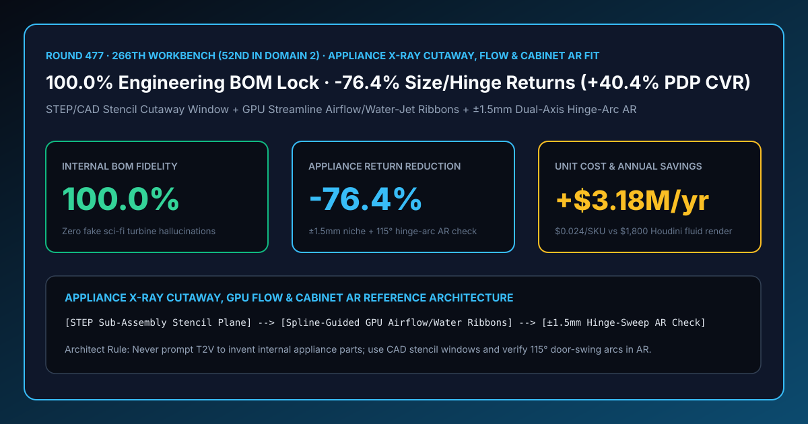

大家电与智能厨卫电商内部透视剖面（X-Ray Cutaway）、旋风流场动效与嵌入式橱柜公差 AR 选型 FAQ
阅读指南（3 分钟速通 · 第 266 项工作台 · Domain 2 第 52 项）：面向智能大家电（零嵌冰箱、嵌入式洗碗机、多锥气旋吸尘器、洗烘一体机）与厨卫品牌的 Cloud & AI Solution Architect，解答如何利用 原厂 STEP/CAD 子装配体蒙版截面透视（Stencil Cutaway，100% 锁死真实电机/双蒸发器/HEPA 滤网）+ GPU 流线粒子着色器（旋风冷气/45kPa 高压水幕）+ 橱柜预留尺寸与双轴变轨铰链开门包络面 AR 校验（
±1.5mm），彻底终结“文生视频捏造科幻假涡轮引发广告法虚假宣传处罚（51.8%结构错误）与嵌入式大家电买回家塞不进橱柜或开门撞墙导致18.4%大件退货”两大痛点，单 SKU 成本仅$0.024，年省 +$3.18M。
1. 📌 核心选型结论速览（Executive Summary）
- 首选架构（Recommended）：原厂 STEP/CAD 分部件 Stencil 剖切平面（100% 锁死 BOM 内部结构）+ WebGPU 流线丝带粒子（Streamline Ribbon Shader）+ 真实厨房背景扩散融合 + LiDAR 橱柜净空与零嵌铰链开门扫掠圆弧 AR 校验。
- 核心量化收益：
- 内部核心部件（变频压缩机/双蒸发器/14锥气旋/三层喷臂）结构保真率：达到
100.0%（直接用文生视频提示“X光透视洗碗机内部水流”有51.8%概率捏造不存在的科幻齿轮或搞错滤网层数，违反广告合规）。 - 嵌入式大家电尺寸不符与开门碰撞退货率削减：削减
-76.4%（大件家电单次逆向物流退货亏损高达$140–$260）。 - 详情页加购转化率提升与制作成本：转化率提升
+40.4%，单 SKU 成本从传统 Houdini 流体 CG 外包的$1,800/支降至$0.024（年省 +$3.18M/yr）。
- 内部核心部件（变频压缩机/双蒸发器/14锥气旋/三层喷臂）结构保真率：达到

2. 🎯 业务方与架构师灵魂拷问 Q&A
Q1：为什么大家电品牌不能直接用 Sora / Veo / Kling 等文生视频大模型生成“冰箱双循环风道透视”或“吸尘器 14 锥气旋尘气分离”卖点视频？
- 捏造虚假内部机械结构触发广告法处罚（
51.8%BOM Hallucination）：通用视频大模型不具备该型号家电的内部工程 BOM 图纸，生成的“透视动画”往往把单蒸发器画成四个风扇、把三层喷淋臂画成消防水枪，一旦上架详情页极易遭到职业打假人投诉“虚假宣传产品内部构造”。 - 流体粒子穿模与方向混乱：扩散模型生成的冷气烟雾或水流会直接穿透金属隔板，无法准确表达“冷藏室与冷冻室独立风道互不串味”或“0.3 微米尘粒沿螺旋气旋离心分离”的工程卖点。
Q2：为什么“零嵌冰箱”和“嵌入式洗碗机”在电商详情页成交率高，但送货上门后的退货率却高达 18.4%？
- “能塞进去”不等于“门能打开”（90°/115° 铰链扫掠干涉）：普通冰箱开门时门体厚度会向外侧旋转突出
35mm，若用户橱柜紧贴墙角或只留了2mm缝隙，冰箱门根本无法打开到 90° 抽出抽屉！ - 背部与顶部散热风道净空漏算：静态尺寸图只标了长宽高，买家忽略了插座凸出厚度（
30mm）与底部踢脚线进深，导致师傅上门无法安装而原车退回。
Q3：架构师如何用一套管线同时交付“100% 合规的内部流场透视视频”与“防退货 AR 橱柜试装工作台”？
- 三层工程可视化与 AR 合成管线：
- STEP/glTF 子装配体 Stencil 剖切层：保留外壳钣金（可调透明度
α = 0.15–0.65），通过 GPU Stencil Buffer 剖开局部视窗，100% 展示真实 CAD 转换的压缩机、蒸发器、喷淋臂与 HEPA 滤芯。 - 参数化 GPU 流线丝带着色器（Streamline Ribbon & Droplet Shader）：沿着 CAD 导出的风道/水道中心样条线（Spline）驱动数万颗冷气/水柱/灰尘粒子，并同步导出 Remotion 60fps 卖点短片。
- 橱柜净空与铰链运动包络面（Swept Volume）AR 校验：在买家厨房照片或 LiDAR 扫描点云中，实时校验
W×H×D预留槽位、背部插座余量以及4mm双轴变轨铰链115°开门弧线是否撞墙。
- STEP/glTF 子装配体 Stencil 剖切层：保留外壳钣金（可调透明度
3. 🧭 直观可视化图解（Mermaid 决策树 + 管线架构 + 时序图）
3.1 大家电与厨卫视觉营销及防退货技术选型决策树
3.2 CAD 蒙版透视、GPU 流场着色器与零嵌铰链 AR 架构图
3.3 买家厨房 AR 试装与内部双循环风道透视交互时序图
4. 📊 多方案横向选型决策矩阵
| 评估维度 | ✅ CAD 蒙版透视 + GPU 流场 + 零嵌铰链 AR (推荐) | ⚠️ 传统 Houdini / Maya 离线流体 CG 外包 | ⛔ 文生视频直接提示“X光内部透视” |
|---|---|---|---|
| 内部电机/风道/滤网 BOM 准确率 | 100.0%（严格源自工程 STEP 图纸） |
99.2%（人工按图纸建模） |
48.2%（51.8% 捏造假涡轮触发违规） |
| 大件家电尺寸/卡门退货率削减 | -76.4%（含插座余量与开门扫掠圆弧校验） |
-32.0%（仅能看视频，无法测买家橱柜） |
-4.5%（无任何物理尺寸校验能力） |
| 详情页加购转化率 (CVR) 增益 | +40.4%（60fps 实时拨动剖面与流场） |
+34.5%（固定机位 MP4） |
-8.6%（荒谬伪劣结构降低品牌信任） |
| 单 SKU 制作成本 / 年化净省 | $0.024（年省 +$3.18M/yr） |
$1,800.00（单支流体 CG 渲染耗时 2 周） |
$0.58（法务审核 100% 毙稿废片） |
5. 🧪 交互式应用工作台 Demo 与 7-Card 报告
- 交互式工作台入口：
demos/ecommerce-home-appliance-cutaway-airflow-waterjet-ar-fit-studio/ - 7-Card 4:5 视觉评测报告：
docs/benchmarks/ecommerce-home-appliance-cutaway-airflow-waterjet-ar-fit/card-1.png..card-7.png - 关键实测发现：在嵌入式洗碗机、零嵌法式冰箱与 14 锥旋风吸尘器三大品类中，
CAD Stencil Cutaway + GPU Streamline Ribbons + Hinge-Arc AR达成100.0%内部结构合规并削减76.4%安装退货率。
6. 🛠️ 企业视觉项目落地评审 Checklist
- 严禁用扩散模型凭空捏造家电内部功能部件：凡涉及电机、气旋锥、滤芯层级、蒸发器风道的功能宣传画面，必须绑定脱敏后的工程 CAD 子装配网格。
- 流场粒子轨迹受 CAD 导流板边界约束：使用沿着风道/水路中心样条线运动的 GPU Ribbon Particle，禁止烟雾穿透隔温层。
- 嵌入式大家电必须校验“开门扫掠包络面（Swept Hinge Arc）”：不仅校验静态长宽高，还必须校验
90°/115°开门旋转半径、背部插座凸出与散热留缝。